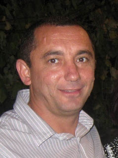

Родился: 28.09.1975
Род: Сербиновы
Возраст: 49
Место жительства: г. Астрахань
Указ Президента Российской Федерации от 22.01.2000 г. № 95
О приеме в гражданство Российской Федерации
Удовлетворить ходатайства о приеме в гражданство Российской Федерации следующих лиц:
...
1038. Сербинов Иван Анатольевич, родившийся в 1975 году в
Украине, проживающий в Астраханской области.
1039. Сербинова, урожденная Терзиева, Наталья Федоровна,
родившаяся в 1978 году в Украине, проживающая в Астраханской
области, с сыном Виталием 1994 года рождения.
...
Исполняющий обязанности Президента Российской Федерации В.Путин
Москва, Кремль
22 января 2000 года
№ 95
Источник: http://www.kremlin.ru/acts/bank/14967/page/7
Отец: Сербинов Анатолий Иванович
Мать: Сербинова (Пундева) Надежда Ивановна
Брат: Сербинов Александр Анатольевич
Сестра: Сербинова Елена Анатольевна
Жена: Сербинова (Терзиева) Наталья Федоровна
Сын: Сербинов Виталий Иванович
Иван Анатольевич. |